Physically Connecting the DxI 9000 to a Lab Automation System (LAS)
This topic includes information about how to prepare the DxI 9000 instrument for connection to a Lab Automation System (LAS) such as DxA or Power Express/Power Processor.
Note: Follow these instructions alongside any relevant procedures from the applicable LAS service manual.
Required Parts
Order the applicable kit below for the LAS system the DxI 9000 will be connected to. Kits include applicable cover extensions and finger guards and a sample pipettor backlight assembly.
| Part Number | Description |
|---|---|
| C74293 | LAS Kit for DxA 5000 |
| C94531 | LAS Kit for Power Processor/Power Express |
Recommended Tools
The following tools are recommended to configure the system for use with an automation track:
- 2.5mm hex driver (for M3 screws)
- 3mm hex driver (for M4 screws)
- 4mm hex driver (for M5 screws)
- Caliper or similar measuring device to set backlight to camera distance (58mm)
Installing Tip Stocker Cover Extensions
Caution: Depending on height of the automation track, installing the cover extensions prior to moving the system to the track location may result in the covers colliding with the track segment. To avoid this, consider one of the following:
- Move instrument to location prior to cover extension installation.
- Keep the top cover open and the rear cover removed when moving the instrument to location on the track segment. (Several screws secure the entire rear cover assembly to the chassis for easy removal.)
Important: Many of the covers and fasteners have built-in room for adjustment to optimize cover gaps and alignments. Begin by fixing the covers per the instructions below, and then loosen screws and covers and adjust as needed to optimize gaps and alignments.
Note: All screws for the cover are M4x8 unless otherwise noted.
- Turn off the instrument. See Turning Off the Instrument for more information.
- Open disposable tip (DT) front cover and remove the four screws as indicated by the red arrows in the image below (left). Loosen, but do not remove, the screws as indicated by the blue arrows in the image below (right).
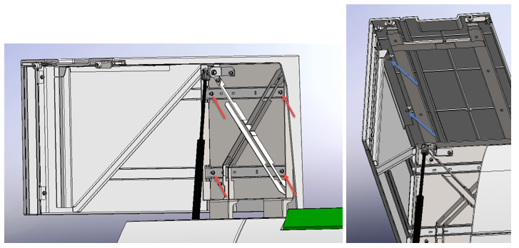
- Remove C61766 by sliding it out from the top cover as indicated by the red arrows in the image below.
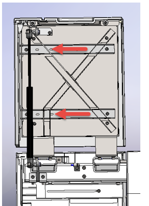
- Remove C61771 by first removing the screws as indicated by the red arrows in the image below.
Note: If connecting to the LAS automation system, install C86703 using the screws previously removed. If connecting to Power Processor or Power Express, no additional parts need to be installed on C61766.
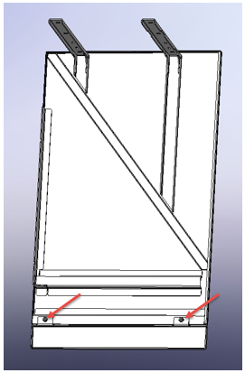
- Assemble C61768 and C61769 using two M4 x 8 SEMS screws as indicated in the image below. Also start, but do not tighten, two M4 x 8 button head screws as indicated by the green arrows in the image below.
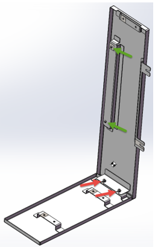
- If connecting to LAS, install C86702 using two M4 x 8 button head screws.
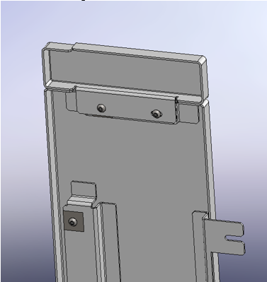
- Install C61766 using M4 x 8 SEMS screws as indicated. Tighten button head screws as indicated by the yellow arrows in the image below.
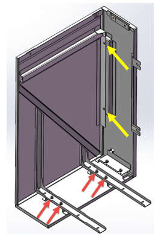
- Combine assemblies as shown. Install M4 x 8 SEMS screws as indicated by the blue arrows in the image below. Tighten screws as indicated by the green circles in the image below.
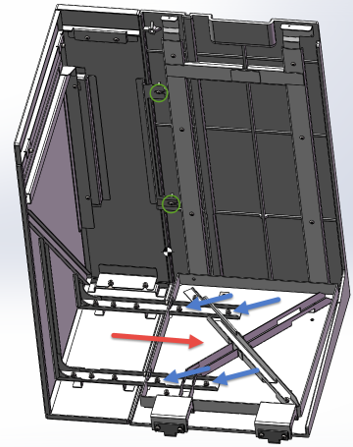
- On the rear cover, loosen but do not remove, the two screws as indicated by the red arrows in the image below, and slide the rear cover out as far as it will go in the direction indicated by the green arrow in the image below.
Note: If necessary, remove the cover from the instrument for easier access.
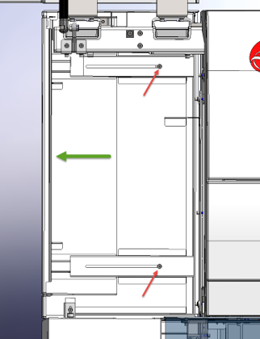
- Install two M4 x 8 SEMS screws a few turns as indicated and then install C67747 as shown. Be sure the cover is aligned properly, and tighten the screws loosened in the previous step, and then tighten the screws as indicated by the circles in the image below.
Note: It may be necessary to loosen screws securing the cover hinges to optimize cover fit with the extensions mounted.
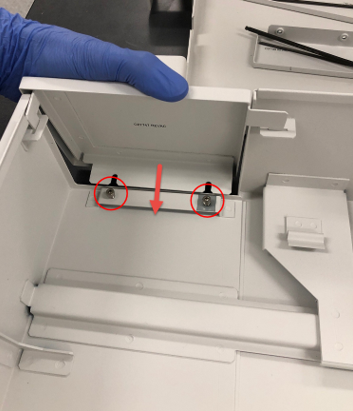
- Remove C67749 as indicated by the red arrow in the image below, by removing QTY 2 M4 (3mm driver) screws.
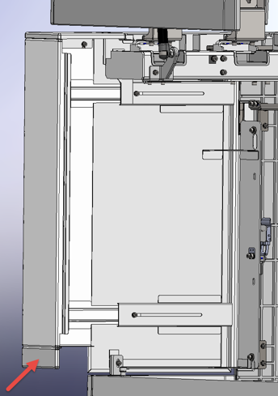
- For DxA Only Install C86704 and C86705 where shown using M4 x 8 SEMS screws. If connecting to Power Processor or Power Express, no additional components are required on this cover.
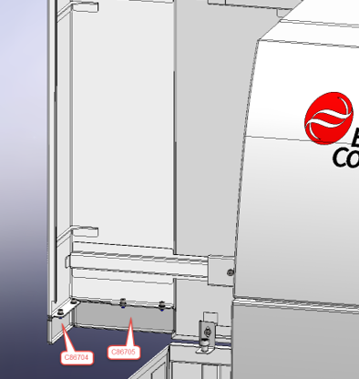
- Double check tightness of all screws used during assembly of the covers and be sure the front cover opens and closes smoothly with no rubbing on adjacent covers.
Note: Loosen slotted screws and adjust as needed to reduce gaps and optimize the fit.
Relocating the Aliquot Sample Pipettor Subsystem
Follow these steps to relocate the Aliquot Sample Pipettor subsystem to the automation track position so that it is able to aliquot from track samples.
Note: To prevent any damage to the mandrel during this procedure, secure the mandrel in the up position with a cable tie.
- Make note of the cable routing through the J-clips prior to removing or disconnecting anything. Cable routing is a critical factor to ensure that nothing is damaged. Determine if these photos and this step are necessary.
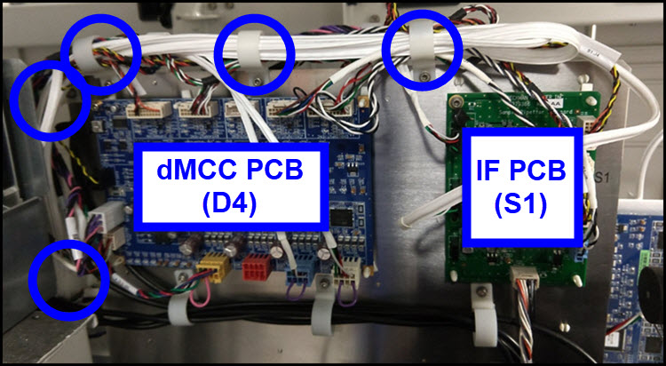
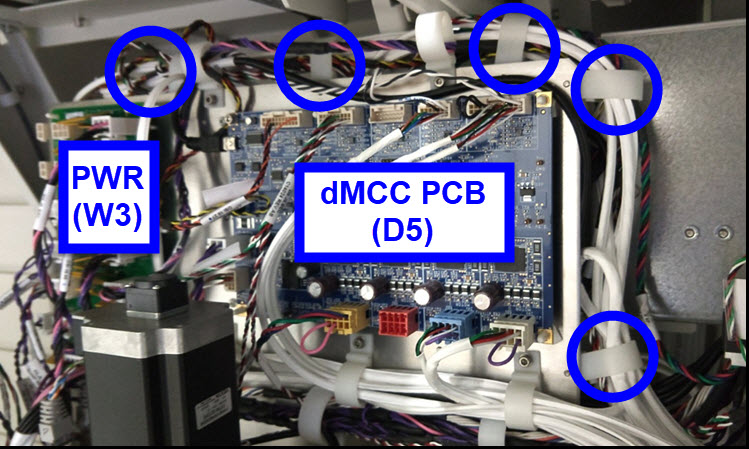
- Using a 2.5mm driver remove the two screws and bracket holding the flat white (Leoni) cable in place.
Note: Using a felt-tip marker or similar, mark the cable where it is held in place by the bracket for re-installation later.
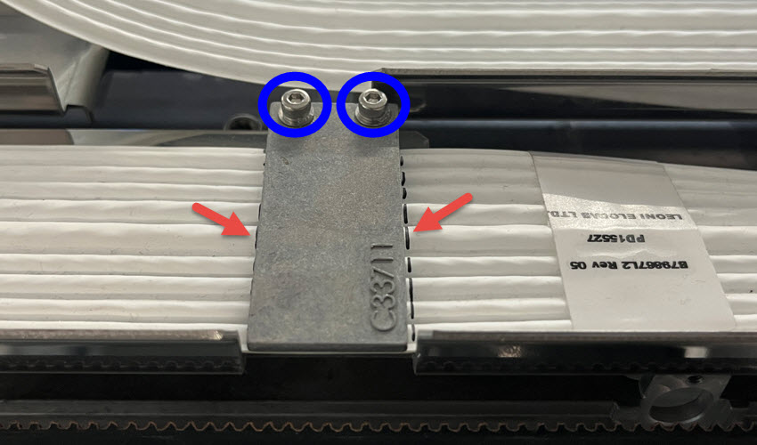
- Using a 2.5mm driver remove the three screws and silver plate. This will give you access to the two optical sensors that will have to be re-positioned.
- Unplug the two optical sensors (x-home and x-index) located within the sample pipettor X-gantry. Take notes about which sensor is connected to which plug.
- Free all cables for the sample aliquot pipettor from any J-clips and cable restraints so that there is enough free cable to move the aliquot pipettor to automation position.
- Remove the four screws (4mm driver) that secure the Aliquot Sample Pipettor subsystem to the gantry/supports. There are three toward the end of the gantry nearest the tip stocker, and one near the X-axis motor assembly.
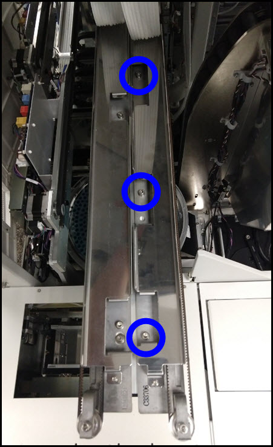
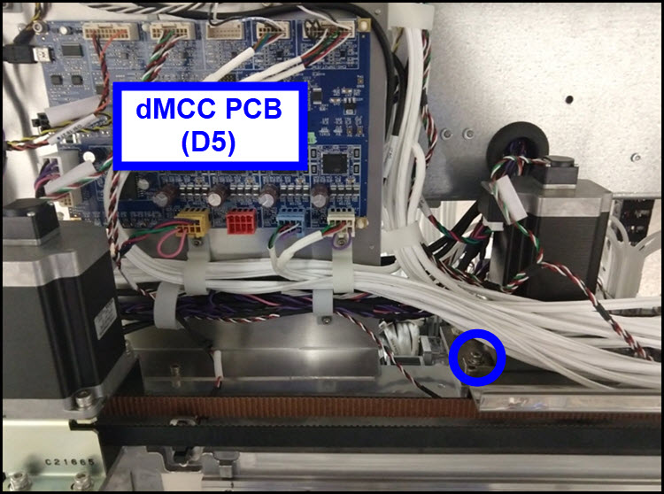
- Carefully lift the Sample Aliquot Pipettor subsystem and move it toward the Tip Stocker subsystem (leftward) until it fully re-seats in the automation position (the slotted positions to the right of the original positions). The subsystem is pinned in both positions and should sit flush on top of the gantry.
Caution: Move the assembly slowly and be sure the cabling does not get caught or damaged.
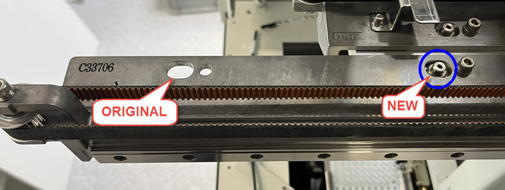
- Secure the subsystem in place with the four screws previously removed (4mm driver). There are two towards the end of the gantry nearest the tip stocker, and two near the X-axis motor assembly.
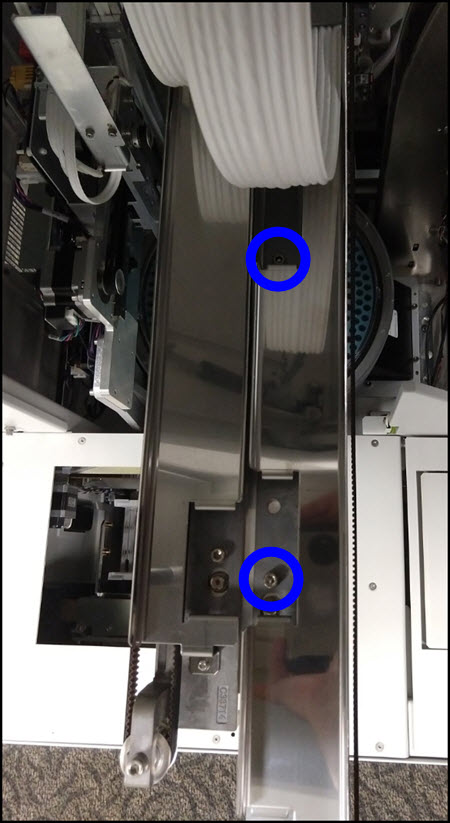
- Using a 2.5mm driver remove the two optical sensors and relocate them to their new LAS positions.
Note: Be careful not to drop or lose the screw.
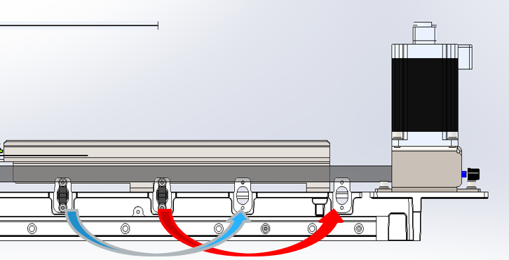
- Reconnect the two optical sensors to their plug connectors.
- Remove the travel limit screw shown in the photo below:
Note: If not removed, the pipettor will not be able to move to the end of the gantry and access the SPU aspiration point.
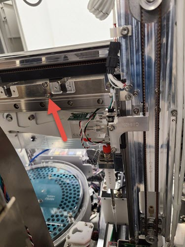
- Reinstall the silver cover plate. Use a 2.5mm driver to secure the three screws.
- Reposition the flat white (Leoni) cable on top of the silver cover plate.
- Reinstall the cable bracket. Use a 2.5mm driver to secure the two screws. Be sure that the securing plate aligns with the previously noted markings on the cable.
- Move the Aliquot Sample Pipettor Subsystem on its X-axis left to right to be sure the movement is free of any obstacles.
Installing Aspiration Point Backlight and Finger Guards
Follow these steps to install the backlight for the sample pipettor at the aspiration point (LAS track):
- Fix the backlight to the backlight bracket using the four supplied screws (1), and route the backlight cable through the supplied J-clip (2).
Note: Be sure the backlight cable is not routed in front of the light where it may interfere with images or sample pipettor movement.
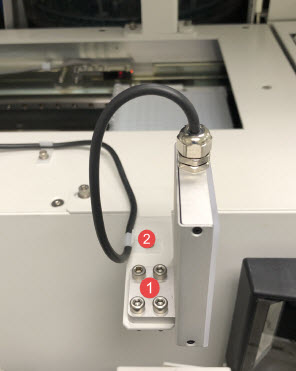
- Open the right rear bi-fold door and locate the backlight extension Y-cable (connected to J5 at the sample wheel dMCC D7). Find the loose end (likely wound in the J-clips of the rear corner chassis support) and route it out the side of the instrument across the top of the tip stocker toward the automation track.
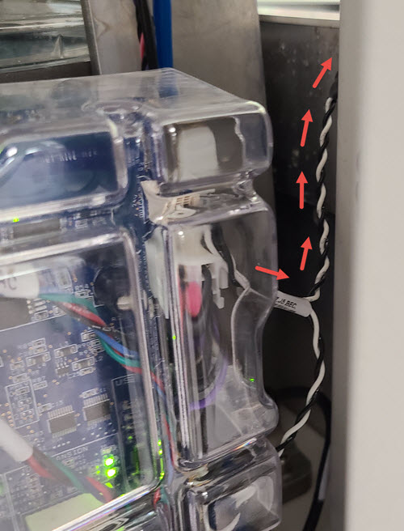
- Using the supplied screws and J-clips, loosely fix the barcode reader bracket to the instrument cover (1), secure the backlight cable using two J-clips (2), secure the backlight extension cable using four J-clips (3), and connect the backlight cable to the extension cable:
Note: The backlight bracket is different for DxA and PE, the DxA bracket is shown below, but the PE bracket mounts to the same location.
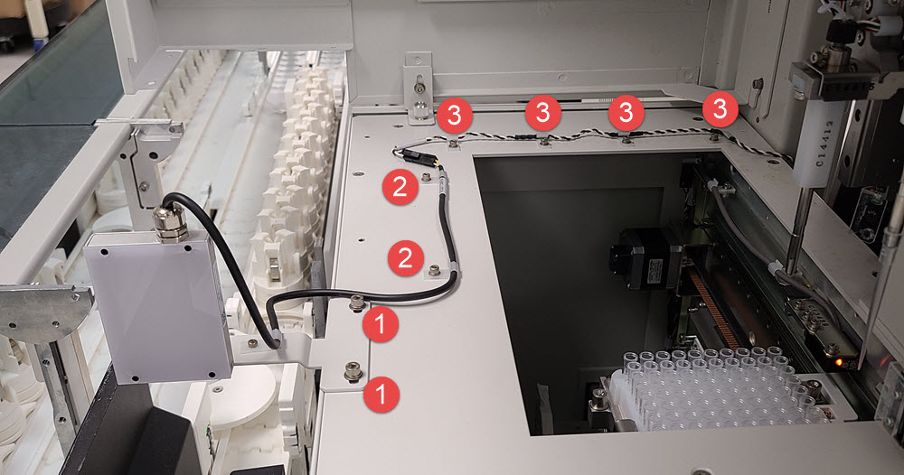
Note: For Power Express Only, an additional front finger guard is fixed to the backlight bracket. Install this guard at the same time as the backlight bracket as shown below.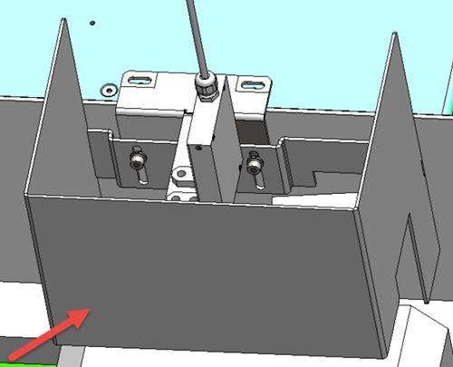
- With the bracket screws (1 above) loosened to allow movement of the backlight, set the gap between the backlight and the sample pipettor camera to 58mm as shown below, and tighten the two screws to secure the backlight in place.
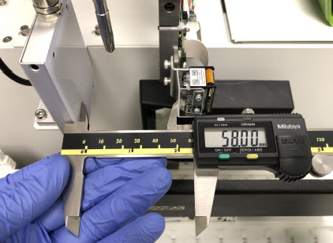
- Install the rear finger guard and fix to the top of the tip stocker using two supplied screws:
Note: This part is different for DxA (C97162) and PE (C95085), but the mounting and location is identical.
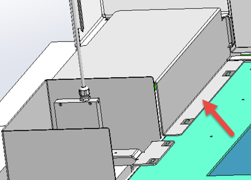
Position and Physically Connect the Lab Automation System (LAS)
Move the lab automation system (LAS) into position, connect the communications cables, and install applicable transport segment cover kits.
- For DxA, see applicable topics in the DxA Service Manual.
- For Power Express, see applicable topics in the Power Express Service Manual.
Configure the DxI 9000 to Connect to the Lab Automation System (LAS)
Configure the DxI 9000 to connect to the lab automation system (LAS). See Connections for more information.